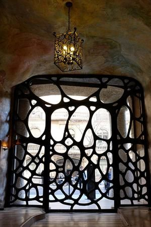

Cathedral of Barcelona
Is a cathedral built between 13th and 15th centuries. It is home now to the archbishop of Barcelona.
Colonya Guell
Inaugurated in 1890, the idea of Eusebi Guell one of Gaudi's closest friends and who supported his works.
It was intended to be the home of the fabric workers.
Park Guell
Once again, asked by Eusebi Guell, Gaudi constructed this park between 1900 and 1914 and it became
a public park in 1926. It is now a World Heritage Side as declared by UNESCO.
La Pedrera
This was a house constructed between 1906 and 1912 to Pere Mila and Roser Segimon, a newly wedded couple that
wanted to be part of Barcelona's elite by living in the street Passeig de Gracia
La Pedrera's door
Gaudi was friends with the Nobel winner Santiago Ramon y Cajal. He discovered the neuron and as a tribute Gaudi
made the door shaped as the first image he took of the neurons.
La Sagrada Familia
This ongoing construction is expected to be finished in 2026 and many architechts have been part of it for
many years, but they all work under the instructions and planes that Gaudi left.